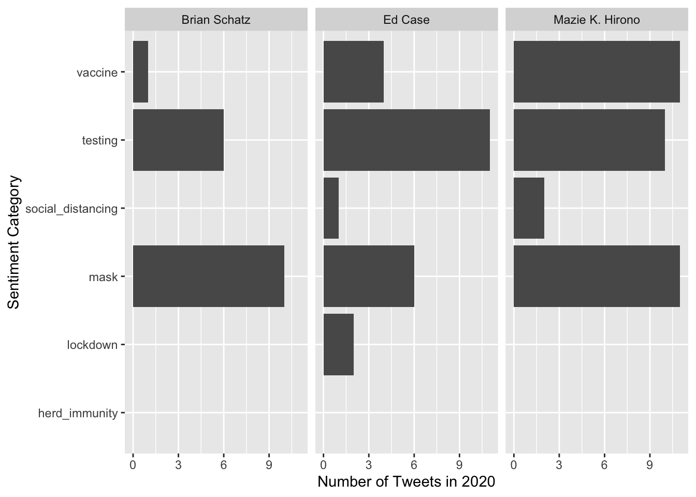
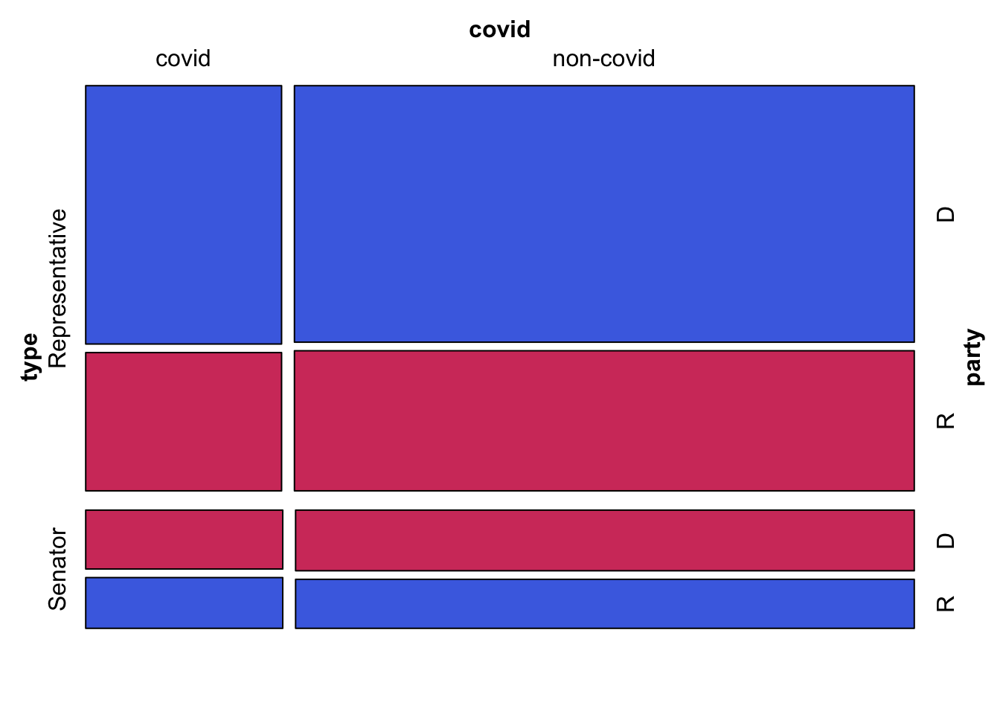

Chapter 5 Results
The following mosaic plot will help us get a better idea of how changes in mobility roughly correspond with congress members characteristics. This gives us a baseline with which to compare to COVID related metrics.
## [1] "twitter_handle"
## [2] "tweet_content"
## [3] "tweet_id"
## [4] "geolocation_of_tweet"
## [5] "language_of_tweet"
## [6] "date_and_time"
## [7] "full_name_of_member"
## [8] "abbreviated_state"
## [9] "unabbreviated_state"
## [10] "type_of_member"
## [11] "party_of_member"
## [12] "covid_label"
## [13] "retail_and_recreation_percent_change_from_baseline"
## [14] "grocery_and_pharmacy_yearly_percent_change"
## [15] "parks_percent_yearly_change"
## [16] "transit_stations_yearly_percent_change"
## [17] "workplaces_yearly_percent_change"
## [18] "residential_yearly_percent_change"## # A tibble: 2,395,716 × 4
## name covid location_type change_in_mobility
## <chr> <chr> <chr> <dbl>
## 1 Adriano Espaillat covid Retail & Recreation -16.6
## 2 Adriano Espaillat covid Grocery & Pharmacy 0.509
## 3 Adriano Espaillat covid Parks & Recreation 47.8
## 4 Adriano Espaillat covid Transit Station -27.2
## 5 Adriano Espaillat covid Workplaces -27.3
## 6 Adriano Espaillat covid Residential 9.28
## 7 Adriano Espaillat non-covid Retail & Recreation -16.6
## 8 Adriano Espaillat non-covid Grocery & Pharmacy 0.509
## 9 Adriano Espaillat non-covid Parks & Recreation 47.8
## 10 Adriano Espaillat non-covid Transit Station -27.2
## # … with 2,395,706 more rows## # A tibble: 2,652 × 4
## # Groups: name, location_type [2,652]
## name location_type change_in_mobility n
## <chr> <chr> <dbl> <int>
## 1 A. Donald McEachin Grocery & Pharmacy -0.137 724
## 2 A. Donald McEachin Parks & Recreation 18.9 724
## 3 A. Donald McEachin Residential 9.32 724
## 4 A. Donald McEachin Retail & Recreation -11.9 724
## 5 A. Donald McEachin Transit Station -15.9 724
## 6 A. Donald McEachin Workplaces -26.1 724
## 7 A. Drew Ferguson IV Grocery & Pharmacy 0.955 183
## 8 A. Drew Ferguson IV Parks & Recreation 15.7 183
## 9 A. Drew Ferguson IV Residential 7.35 183
## 10 A. Drew Ferguson IV Retail & Recreation -7.04 183
## # … with 2,642 more rows The outliers and difference in variance is a rather interesting phenomenon in this visualization. An interesting follow-up to this plot is the question: are the outliers across location categories the same congress members? It is possible that these are different outliers across each category.
The outliers and difference in variance is a rather interesting phenomenon in this visualization. An interesting follow-up to this plot is the question: are the outliers across location categories the same congress members? It is possible that these are different outliers across each category.
## # A tibble: 399,286 × 18
## twitter_handle tweet_content tweet_id geolocation_of_… language_of_twe…
## <chr> <chr> <dbl> <chr> <chr>
## 1 RepEspaillat "Pass the #CASHAct… 1.34e18 None English
## 2 RepEspaillat "News of the loss … 1.34e18 None English
## 3 RepEspaillat "#WearAMask wash y… 1.34e18 None English
## 4 RepEspaillat "Can someone tell … 1.34e18 None English
## 5 RepEspaillat "Delighted to join… 1.34e18 None English
## 6 RepEspaillat "As we near the cl… 1.34e18 None English
## 7 RepEspaillat "#COVID19 exploite… 1.34e18 None English
## 8 RepEspaillat "American families… 1.34e18 None English
## 9 RepEspaillat "An extension to t… 1.34e18 None English
## 10 RepEspaillat "RT @joacosta29: P… 1.34e18 None Spanish
## # … with 399,276 more rows, and 13 more variables: date_and_time <dttm>,
## # full_name_of_member <chr>, abbreviated_state <chr>,
## # unabbreviated_state <chr>, type_of_member <chr>, party_of_member <chr>,
## # covid_label <chr>,
## # retail_and_recreation_percent_change_from_baseline <dbl>,
## # grocery_and_pharmacy_yearly_percent_change <dbl>,
## # parks_percent_yearly_change <dbl>, …## # A tibble: 3,749 × 18
## twitter_handle tweet_content tweet_id geolocation_of_t… language_of_twe…
## <chr> <chr> <dbl> <chr> <chr>
## 1 MazieHirono "Millions of peop… 1.34e18 None English
## 2 MazieHirono "Mele Kalikimaka!… 1.34e18 {'place_id': '01… English
## 3 MazieHirono "Trump is running… 1.34e18 None English
## 4 MazieHirono "RT @USGSVolcanoe… 1.34e18 None English
## 5 MazieHirono "None of this wou… 1.34e18 None English
## 6 MazieHirono "By allowing stat… 1.34e18 None English
## 7 MazieHirono "Our work has onl… 1.34e18 None English
## 8 MazieHirono "Hawaii’s Congres… 1.34e18 None English
## 9 MazieHirono "But in 1996 a le… 1.34e18 None English
## 10 MazieHirono "In exchange citi… 1.34e18 None English
## # … with 3,739 more rows, and 13 more variables: date_and_time <dttm>,
## # full_name_of_member <chr>, abbreviated_state <chr>,
## # unabbreviated_state <chr>, type_of_member <chr>, party_of_member <chr>,
## # covid_label <chr>,
## # retail_and_recreation_percent_change_from_baseline <dbl>,
## # grocery_and_pharmacy_yearly_percent_change <dbl>,
## # parks_percent_yearly_change <dbl>, … However, the outliers in parks, grocery & pharmacy, retail & recreation, and transit stations are the same 3 outliers. Most of them have non-covid related tweets which could be why they are so influential. Mazie K. Hirono is senator from Hawaii, Brian Schatz is a senator from Ohio, and Ed Case is a representative from Hawaii. Since two senators are from Hawaii, this suggests a geographic element to the extreme changes in mobility relative to other representatives. Parks and transit stations seem to have to most variation in terms of the number of tweets vs
However, the outliers in parks, grocery & pharmacy, retail & recreation, and transit stations are the same 3 outliers. Most of them have non-covid related tweets which could be why they are so influential. Mazie K. Hirono is senator from Hawaii, Brian Schatz is a senator from Ohio, and Ed Case is a representative from Hawaii. Since two senators are from Hawaii, this suggests a geographic element to the extreme changes in mobility relative to other representatives. Parks and transit stations seem to have to most variation in terms of the number of tweets vs
 While it is no surprise that vaccines, testing, and masks were included among these outliers, it is interesting to note that social distancing is not as frequently mentioned. Perhaps this is a clue to the types of outreach and education that sticks with constituents.
## # A tibble: 1,590,124 × 5
## type covid party location_type positive_change
## <fct> <fct> <fct> <chr> <fct>
## 1 Representative covid D positive_change_parks yes
## 2 Representative covid D positive_change_transit_stati… no
## 3 Representative covid D positive_change_parks no
## 4 Representative covid D positive_change_transit_stati… yes
## 5 Representative non-covid D positive_change_parks yes
## 6 Representative non-covid D positive_change_transit_stati… no
## 7 Representative non-covid D positive_change_parks no
## 8 Representative non-covid D positive_change_transit_stati… yes
## 9 Representative non-covid D positive_change_parks yes
## 10 Representative non-covid D positive_change_transit_stati… no
## # … with 1,590,114 more rows